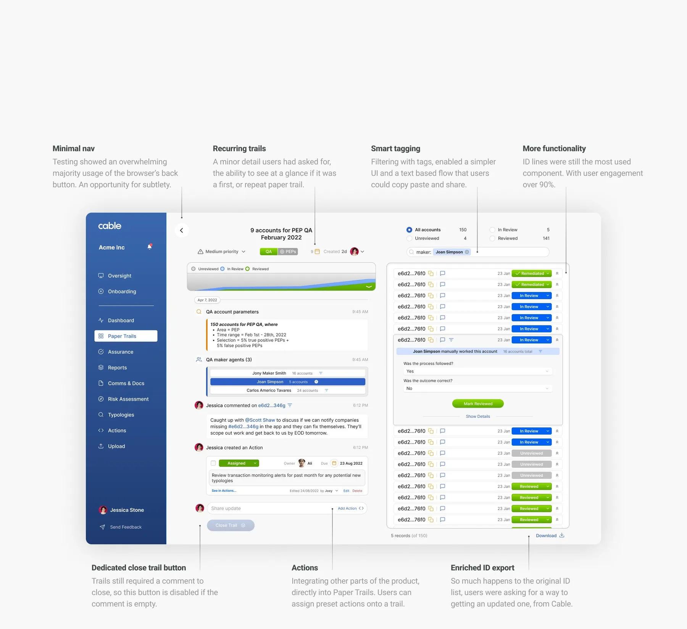

Cable was the only financial crime startup with a live product, which in that market is harder than it sounds. But the product was one feature, and no bank was paying for it. I joined as the first designer, built it into a suite, and the year I left, a bank bought it.
Founding Designer. The whole product surface, from a single feature to a compliance suite. Jul 2021 to Oct 2022, remote UK.
context
Banks have to prove to their regulator that their financial crime controls actually work: that every customer was checked, every alert was looked at, every rule was followed. Cable tested those controls automatically and flagged whatever failed. A Paper Trail was the record of what happened next, the flagged accounts, who reviewed them, what was decided. It is the evidence a bank hands over when someone asks whether it is doing its job.
That was the entire product. And it was thin. Paper Trails had no home of its own, and the accounts that needed reviewing lived inside a database file that users uploaded into a chat thread. The most important work in the product was happening inside an attachment.
There was a reason for that. A handful of banks had Cable for free in exchange for helping shape it, so the product had been designed by engineers and compliance experts, one request at a time. Excellent way to learn a domain. Poor way to build a product.
product strategy
First I gave Paper Trails somewhere to live: a home page, and cards carrying their own state, needs reviewing, in progress, closed. State on the card meant the filter component could go, and the second navigation bar could start coming apart. Then I pulled those account IDs out of the uploaded file and into a real list in the interface, click to copy. That list became the most used thing in the product.
Everything moved like Lego. Rearrange the bricks that exist, spend engineering time only where it clearly buys something. Paper Trails touched nearly every feature, so a change rarely stayed put: adding priority to a card meant adding priority to the Paper Trail view too. I mapped the ripple, priced it, then committed. That kind of arithmetic is why a four-person product team could keep shipping.
Research had to be improvised. The market was too niche for comparable products to study and too small for a real user pool, so I leaned on the two fincrime experts in house and on the pilot banks, who turned out to be remarkably willing to sit down and explain their work. That is how the suite got built out: Oversight, where a bank supervises the fintechs it sponsors through the same interface with different data, and a full structural rebuild once the old layout ran out of room.
impact
The pile of client requests had become a coherent product, and the commercial relationship flipped with it. Instead of handing the thing to banks for free in exchange for their help, Cable had something a bank wanted, and sold it. First real sale of the product.
It kept that course. Cable now serves over 50 banks and fintechs, calls itself the leading compliance testing platform, and was acquired by Synctera in 2026. I did not close those deals. I built the product that could be sold.
The shipped product
